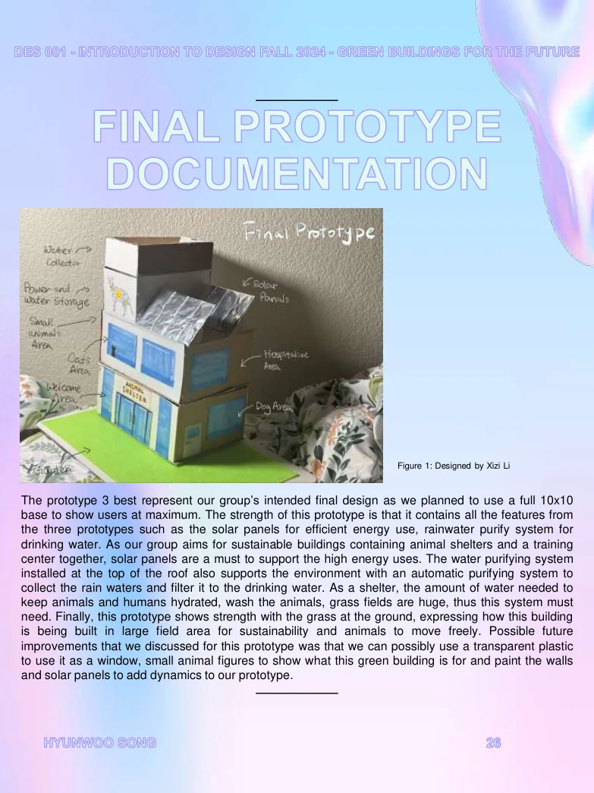
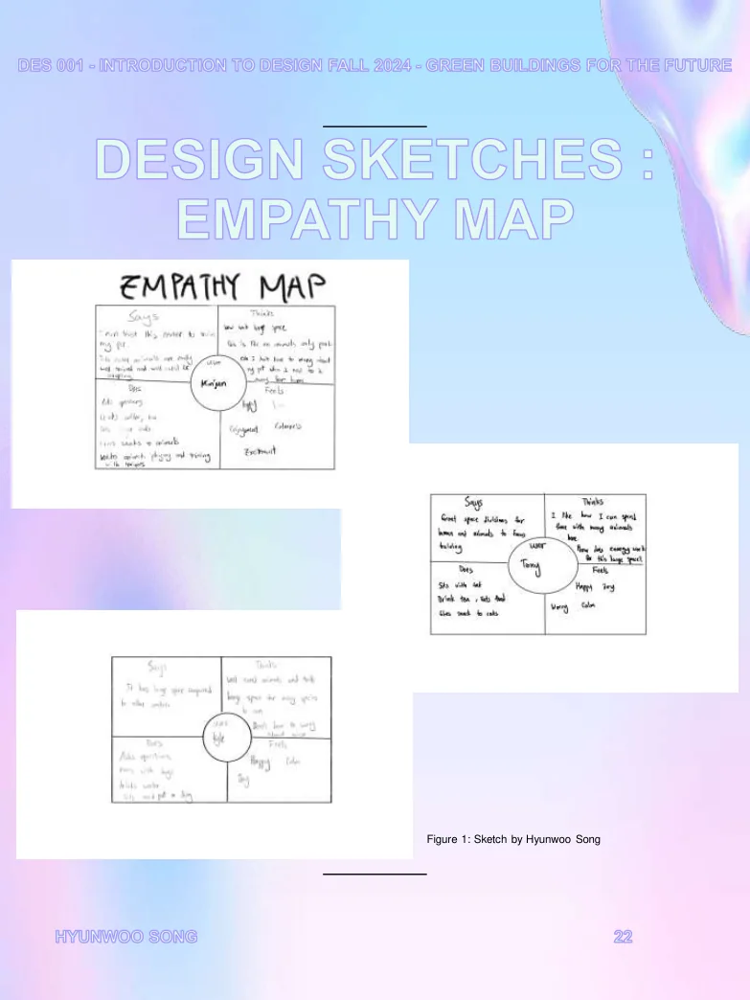
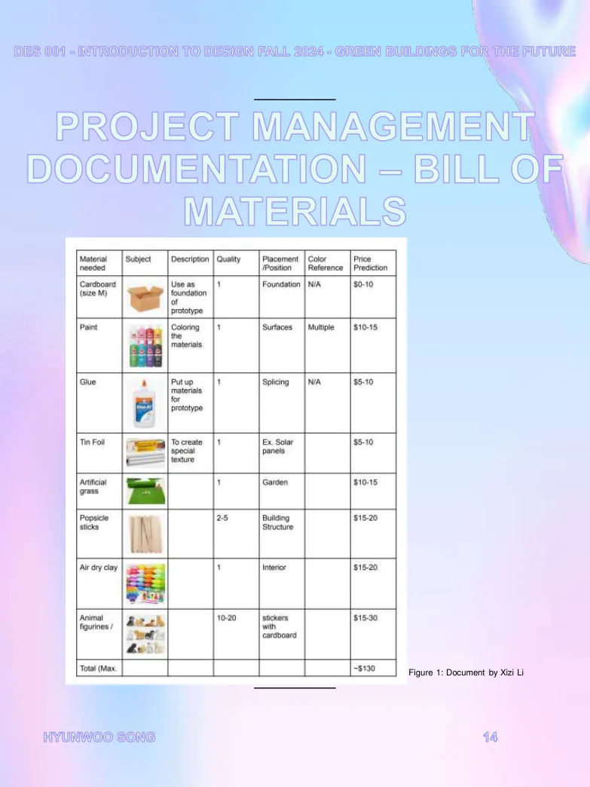
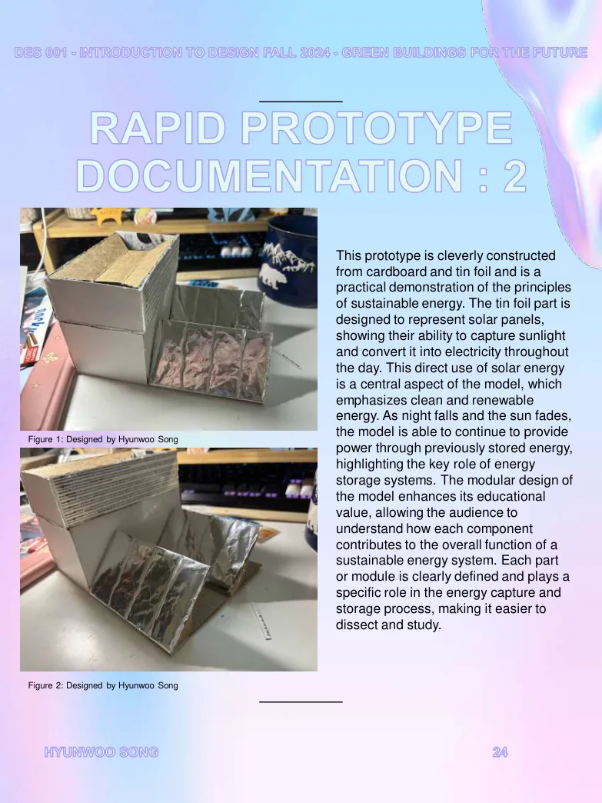

DES 001 · INTRODUCTION TO DESIGN · FALL 2024
Green Buildings
for the Future.
A research-led design project exploring a more sustainable animal shelter through renewable energy ideas, iterative physical prototyping, and a collaborative final showcase.

The challenge
The project investigated environmental concerns associated with architecture. Our group developed an animal shelter concept that considered renewable energy, water collection and purification, animal activity areas, and reuse of materials. The concept was developed through research, persona work, sketching, comparisons, and physical models.
Research to prototype
The process book documents the Sponge, Filter, and Voice phases: investigating precedents and audience needs, organizing ideas with a decision matrix, then testing concepts through rapid prototypes. The images below are reproduced from the submitted process book.


My prototype contribution
I created a cardboard-and-foil prototype illustrating a sustainable energy concept. Foil represented solar panels and the modular structure was intended to help explain energy capture and storage. The submitted documentation explicitly credits this prototype to Hyunwoo Song.

Final showcase
The team presented the animal shelter model at the course showcase, explaining features such as symbolic solar panels, rainwater purification, and outdoor space for animals. The event offered an opportunity to discuss the proposal with visitors and reflect on the design.
Credit: This was a collaborative class project. The process book distinguishes prototypes and illustrations credited to different members; images here are presented with their documented attribution, not as individually authored work unless stated.
Source: DES 001 Fall 2024 process book provided in the class archive.